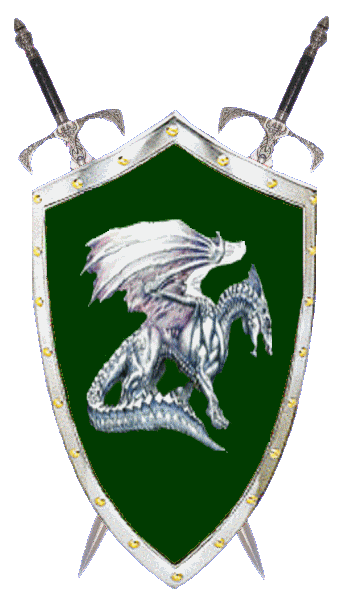

| Übersicht,
Anschläge und Stammtisch (RPG) |
|
Ein ausgewachsener Drache?
|
| Asmodis (RIP) |
Wie vielleicht einigen nicht entgangen ist, so treibt ein Drache sein Unwesen, vielleicht sind es auch mehrere?
Jedenfalls ersuche ich den oder die Betreiber der Karawanen
- Fliegender Fisch 1
- Fliegender Fisch 2
- Hochseekara
- Tara-Cata
die Scherbe zu informieren, wo sich diese Bestien befinden.
Pfalzgraf Tilokh Araxes,
Vorsteher von Zwillingsfels,
Ehemann der reizenden Gwendolyn
Zur 7. Stunde am 80.Blumenmond im Jahre 421 |
15.08.05 18:27
 |
|
| Kinggidora á Chîroqué (RIP) |
endlich :)?
kinggidora,
Kardinal im Dienste des einzig wahren Glaubens an Pheron
Zur 9. Stunde am 80.Blumenmond im Jahre 421 |
15.08.05 18:49
|
|
| Dracon Darknight (RIP) |
Mich würde es ebenfalls interresieren wo ein Drache aufgetaucht sein soll...
Malthur Darknight,
Kardinal im Dienste des einzig wahren Glaubens an Urvan,
Ehemann der reizenden Selina Darknight
Zur 9. Stunde am 80.Blumenmond im Jahre 421 |
15.08.05 18:50
|
|
| Greyfax von Dahén (RIP) |
Hinten anstellen Kardinal Kinggidora. Dein Verkünder hat Vorrang bei der Drachenjagd, ääh, dem intensiven Studium des echsischen Stoffwechsels und seiner Flugeigenschaften. *g*
Greyfax von Dahén,
Hohepriester im Dienste des einzig wahren Glaubens an Pheron
Verkünder des Glaubens an Pheron
Zur 11. Stunde am 80.Blumenmond im Jahre 421 |
15.08.05 19:16
|
|
| Alissa (RIP) |
Diese Informationen werden wohl eine hübsche Stange Geld kosten schliesslich müssen Karawanen neu ausgestattet werden.
Pfalzgräfin Alissa,
Vorsteherin von Lion´s Castle
Zur 11. Stunde am 80.Blumenmond im Jahre 421 |
15.08.05 19:21
|
|
| Dracon Darknight (RIP) |
Ich glaube eher die Karawanenfürhrer sind Froh wenn sie die Drachenplage los sind...
Malthur Darknight,
Kardinal im Dienste des einzig wahren Glaubens an Urvan,
Ehemann der reizenden Selina Darknight
Zur 11. Stunde am 80.Blumenmond im Jahre 421 |
15.08.05 19:22
|
|
| Kinggidora á Chîroqué (RIP) |
*Unbemerkt die Geldbörse von Greyfax stibitzt und sie in eine Ecke am Ende des raumes wirft* Ist das nicht deine Greyfax??? Hol sie lieber bevor noch ein anderer kommt. *Greyfax geht sie sich holen und kinggidora stellt sich an seinen alten platz* Tz Tz Tz, wie kannst bloß so undvorsichtig sein *sagt leise vor sich hin: "hrhr mich verarschste nicht"*
kinggidora,
Kardinal im Dienste des einzig wahren Glaubens an Pheron
Zur 12. Stunde am 80.Blumenmond im Jahre 421 |
15.08.05 19:36
|
|
Arafíriel ô Athelas
 |
Ein Dieb, ein Dieb! *zeigt auf kinggidora* Er hat den ehrenwerten Verkünder des einzig wahren Glaubens an Pheron bestohlen! Fangt ihn! *die Stadtwachen stürzen sich auf ihn*
Okay, Ihr könnt ihn wieder loslassen, ich schätze, das war nur ein Scherz... Haha! *man schaut kinggidora etwas verdutzt an*
Flocke,
Kardinälin im Dienste des einzig wahren Glaubens an Pheron
Zur 13. Stunde am 80.Blumenmond im Jahre 421 |
15.08.05 19:43
|
|
| Meandor (RIP) |
Das KONVENT desen Gottheit LARJA genannt wird sollte diesen Drachen in schutz nehmen!
soviel ich weiss haben die anhänger larjas folgende aufgaben: Im Wesentlichen ist im Sinne Larja’s darauf zu Achten, das alle Tiere vor sinnloser Vernichtung bewahrt werden, keine Art ausgerottet wird und keine Tierkinder sowie Muttertiere getötet werden.
also solange nur ein paar karawanen betroffen sind die umgelegt werden können sollte der Drache der noch dazu der einzig bekannte der scherbe ist unter den schutz des konventes stehen!
Wird dem nicht nachgekommen klage ich das Larja-Konvent der Ketzerei an ihrer eigenen Göttin an!
gez.
Meandor
Zur 15. Stunde am 80.Blumenmond im Jahre 421 |
15.08.05 20:17
|
|
| Kinggidora á Chîroqué (RIP) |
Klar und wenn der Drache dann unter schutz steht und zufällig im hain fliegt? Dann spricht der König sein Machtwort und der Schutz is aufgehoben wetten?
kinggidora,
Kardinal im Dienste des einzig wahren Glaubens an Pheron
Zur 18. Stunde am 80.Blumenmond im Jahre 421 |
15.08.05 20:51
|
|
| Gatark (RIP) |
Drachen hauen drachen hauen *sing*
ich möchte auch ein stück
drache soll lecker schmecken
Sir Gatark,
Vorsteher von Navisko
Zur 18. Stunde am 80.Blumenmond im Jahre 421 |
15.08.05 20:56
|
|
| Sine (RIP) |
Werter Meandor,
Drachen sind keine Tiere sondern pervertierte, hungriege, allesfressende Bestien. Nach Eurer Logik müsste man dann auch alle Rammsporne, Erdwürmer, Riesenspinnen und erst recht Jung und Baby-Drachen unter Schutz stellen.
(in anderen Welten mag das anders sein. Ich kenne sehr wohl einige Völker die von Ihren Heimatlanden anderes über Drachen berichteten. Aber hier hat noch kein Jung oder Baby-Drache gesprochen oder gar etwas Gutes getan und von erwachsenen Drachen erwarte ich nichts besseres sondern nur schlimmeres.)
Die Sieben zum Grusse,
Markgräfin Sine Riognagh,
Vorsteherin von Brilandia,
Anführerin der glorreichen Nation "Provinz Brilandia"
Zur 19. Stunde am 80.Blumenmond im Jahre 421 |
15.08.05 21:05
|
|
| Aemon (RIP) |
also solange nur ein paar karawanen betroffen sind die umgelegt werden können sollte der Drache der noch dazu der einzig bekannte der scherbe ist unter den schutz des konventes stehen!
Karawanen bestehen meist aus Kamelen und Karawanenführer.
Somit ein Tier und ein Mensch/Halbling/Elfe/Zwerg etc. Wenn ein Tier diese Karawane Angreift hat es nichts anderes zu erwarten, auch wenn es nicht wirklich weiß was es da getan hat...
*grinsend vom anschlag geht*
Ashag,
Kardinal im Dienste des einzig wahren Glaubens an Pheron
Zur 19. Stunde am 80.Blumenmond im Jahre 421 |
15.08.05 21:06
|
|
| Gatark (RIP) |
Noch sind es Karawanen
aber es kann gut seid das es Morgen schon einen Stadt ist die angreifft und was dann wollt ihr in dann immer noch schützen?
Sir Gatark,
Vorsteher von Navisko
Zur 19. Stunde am 80.Blumenmond im Jahre 421 |
15.08.05 21:11
|
|
| Merastus Thóron (RIP) |
Werter Meandor,
natürlich ist ein Drache ein besonderes Wesen, dass eine besondere Aufmerksamkeit verdient. Jedoch fällt ein Drache nicht in den Bereich des Schutzes des Larja Konventes. Ein Drache ist aggressiv, tötet Mensch und Tier und scheint allgemein ein bösartiges Wesen zu haben. Auch ist er im Stande auch ganze Wälder zu vernichten.
Vielleicht solltet ihr euch dies zunächst verinnerlichen bevor ihr noch ein Wort über die Sache verliert.
Gezeichnet,
Merastus Falkner,
Kardinal im Dienste des einzig wahren Glaubens an Larja
Verkünder des Glaubens an Larja
Zur 20. Stunde am 80.Blumenmond im Jahre 421 |
15.08.05 21:20
|
|
| Greyfax von Dahén (RIP) |
Aber ich kann mir nicht vorstellen, daß der sich so einfach erledigen lässt. Das dürfte ein übles Kalliber sein. Da muß man wohl als organisierte Gruppe ran.
Greyfax von Dahén,
Hohepriester im Dienste des einzig wahren Glaubens an Pheron
Verkünder des Glaubens an Pheron
Zur 22. Stunde am 80.Blumenmond im Jahre 421 |
15.08.05 21:46
|
|
| Ramius (RIP) |
Die Götter erscheinen, und ihr denkt nur an euren eigenen Ruhm und Vorteil.
Markgraf Ramius,
Vorsteher von Bor Col Nan,
Anführer der glorreichen Nation "Hüter des schwarzen Drachen",
Meravnan î Cirolur
Zur 22. Stunde am 80.Blumenmond im Jahre 421 |
15.08.05 21:53
|
|
Baldur McMulenberc
  |
Rettet die Drachen!
Baldur Tevylian
Zur 24. Stunde am 81.Blumenmond im Jahre 421 |
15.08.05 22:26
|
|
| Njaminjami Stoppelhoppser (RIP) |
Nunja, falls es sich denn wirklich um einen ausgewachsenen Drachen handelt, wie man ihn aus Erzählungen über lang vergangene Zeiten kennt, so möchte ich diesem nicht alleine begegnen. Die Bevölkerung und die Stadtwache von Bor Col Nan wird diesen Drachen sicher auch nicht mehr als Zeichen des göttlichen ansehen, wenn er einmal Feuer und Verderben bringend die Stadt heimgesucht hat. Doch der Larja Konvent wird sicher schützend seine Hand über dem Tier ausbreiten, auch wenn er bereits tausende Unschuldige gefressen oder verschleppt hat.
Lady Iriana Silberklinge,
Vorsteherin von Strahlen des Diamantes,
Kardinälin im Dienste des einzig wahren Glaubens an Urvan
Zur 5. Stunde am 81.Blumenmond im Jahre 421 |
15.08.05 23:25
|
|
| Merastus Thóron (RIP) |
Werte Iriana Silberklinge,
lesen bildet...
Gruss,
Merastus Falkner,
Kardinal im Dienste des einzig wahren Glaubens an Larja
Verkünder des Glaubens an Larja
Zur 6. Stunde am 81.Blumenmond im Jahre 421 |
15.08.05 23:42
|
|
Laurin
  |
Werte Lady Iriana Silberklinge,
Merastus Falkner hat bereits geäußert, daß der Drache nicht unter dem Schutz Larjas bzw. des Larjakonvents steht.
Ich habe bereits gegen einige Baby und Jungdrachen gekämpft. Ich glaube aber weder, daß Drachen ein "bösartiges Wesen" haben, noch daß es "pervertierte, hungriege, allesfressende Bestien" sind. Ich denke ein Drache ist ein würdiger Gegner für jeden aufrechten Urvaner. Drachen sollten nicht wie Tiere gejagt, sondern in einem fairen Kampf Zwerg gegen Drache bezwungen werden.
Sir Laurin,
Vorsteher von Gloria Bellum Gallicum,
Kardinal im Dienste des einzig wahren Glaubens an Urvan
Zur 7. Stunde am 81.Blumenmond im Jahre 421 |
15.08.05 23:53
|
|
| Vincent Aquila (RIP) |
Wenn ich zum Thema zurück kommen darf. Wenn jemand schachdienliche Hinweise zum Aufenthaltsort des Drachen hat, werde ich diese sehr sher gerne per Diplo entgegennehmen. Die Diplos werden vertraulich behandelt.
Baron Vincent Aquila,
Ehemann der reizenden Enigma
Zur 9. Stunde am 81.Blumenmond im Jahre 421 |
16.08.05 0:19
|
|
| Kinggidora á Chîroqué (RIP) |
Ich schließe mich den Worten Vincent an würde auch gerne erfahren wo dieses pauschierliche Tier wohnt :)
kinggidora,
Kardinal im Dienste des einzig wahren Glaubens an Pheron
Zur 9. Stunde am 81.Blumenmond im Jahre 421 |
16.08.05 0:21
|
|
| Silberbart (RIP) |
Ich auch zahle gut.
Markgraf Silberbart,
Vorsteher von Küstenbrise,
Ehemann der reizenden Alcazar,
Statthalter Sheydaniens
Zur 12. Stunde am 81.Blumenmond im Jahre 421 |
16.08.05 1:06
|
|
| Karandur san Gordar (RIP) |
Ich bin auch bereit gegen einen Drachen anzutreten
*hebt sein Beil und sein Schwert in die Höhe* Mir kann dieses Untier nichts anhaben!
Sir Karandur san Gordar,
Vorsteher von Blut des Granats,
Priester im Dienste des einzig wahren Glaubens an Urvan,
Wächter über das Schwert der Steppenreiter
Zur 22. Stunde am 82.Blumenmond im Jahre 421 |
16.08.05 9:02
|
|
Daerwain Saelhugion
  |
*Betrachtet die Diskussion, murmelt dann vor sich hin* Nur interessant das die Aussage des Larjaverkünders auch auf viele Menschen zu passen scheint: natürlich ist ein Drache ein besonderes Wesen, dass eine besondere Aufmerksamkeit verdient. Jedoch fällt ein Drache nicht in den Bereich des Schutzes des Larja Konventes. Ein Drache ist aggressiv, tötet Mensch und Tier und scheint allgemein ein bösartiges Wesen zu haben. Auch ist er im Stande auch ganze Wälder zu vernichten.
Baron Daerwain Saelhûgion,
Vorsteher von Minas Estel,
Ehemann der reizenden Liria
Zur 23. Stunde am 82.Blumenmond im Jahre 421 |
16.08.05 9:19
|
|
| Rhenaya (RIP) |
Kaum gibt es ein neues Tier, Mosnter oder eine sonstige Kreatur, das es ruhmreich nierderzustrecken gilt kommen sie hervorgeschossen wie Pilze, diese "tapferen" Krieger. Es ist doch immer das selbe... erst Hexen, dann Fluffvögel nun Drachen. Alles nur Gier nach Ruhm.
Und was Euren Kommentar betrifft Daerwain, Mord ist kein Verbrechen das von den Konventen bestraft wird. Eher im Gegenteil, aber ich bezweifle auch das den Drachen jemand versklaven wird.
Rhenaya,
Atheistische Freiheitskämpferin
Zur 24. Stunde am 82.Blumenmond im Jahre 421 |
16.08.05 9:36
|
|
| Vincent Aquila (RIP) |
Rhenaya, das nennt sich jagen, was wir da machen.
Baron Vincent Aquila,
Ehemann der reizenden Enigma
Zur 1. Stunde am 83.Blumenmond im Jahre 421 |
16.08.05 9:42
|
|
| Rhenaya (RIP) |
Jagen weshalb? Weil man dafür Ruhmreich vom Felde zieht, im Grunde ist es doch auch nur ein Mord.
Rhenaya,
Atheistische Freiheitskämpferin
Zur 10. Stunde am 83.Blumenmond im Jahre 421 |
16.08.05 11:55
|
|
| Shadowstorm (RIP) |
Ich finde Laurins Anschlag höchstinteressant ein Duell 1 gegen 1. Ein Zwerg, Elf, Mensch, Wichtel oder Halbork gegen einen Drachen. Man wird sehen ob die Götter dann denjenigen vor Unheil bewahren der den Kampf beginnt, da diese Geschöpfe ja das böse seien und somit die Scherbe bedrohen.
Aber ansonsten denke ich ihr wollt alle nur Jagen.
Ein einzelnes Wesen, welches sich auf seine Weise ein "Brot Leib gestohlen hat" um nicht zu verhungern.
Denn nach euren Aussagen gehe ich nicht davon aus das man dabei von Willkür und Berechnung ausgehen kann.
Shadowstorm,
Kardinal im Dienste des einzig wahren Glaubens an Urvan
Zur 11. Stunde am 83.Blumenmond im Jahre 421 |
16.08.05 12:08
|
|
| Asmodis (RIP) |
Rhenaya
Nicht jeder trachtet nach Ruhm und Ehre. Es gibt auch andere, die einfach wissen wollen, ob der Drache in ihrer Nähe ist und gegebenenfalls weitere Schutzmassnahmen für Stadt und Land getroffen werden müssen.
Einen Drachen jagen? Wer auch immer einen solchen erlegt, meine Hochachtung. Allerdings wage ich die Behauptung, dass ohne tatkräftige Mithilfe einiger Kavalleristen oder ähnlichem dem Drachen nicht beizukommen ist.
Pfalzgraf Tilokh Araxes,
Vorsteher von Zwillingsfels,
Ehemann der reizenden Gwendolyn
Zur 16. Stunde am 83.Blumenmond im Jahre 421 |
16.08.05 13:18
|
|
| Dracon Darknight (RIP) |
Können wir bitte zum Thema zurückkommen?
Den Aufenthaltsort des Drachen?
Malthur Darknight,
Kardinal im Dienste des einzig wahren Glaubens an Urvan,
Ehemann der reizenden Selina Darknight
Zur 21. Stunde am 83.Blumenmond im Jahre 421 |
16.08.05 14:34
|
|
| Frosch (RIP) |
joop, *Malthur zustimmt* wo iss das Ding...
und nebenbei noch... schön das es noch Tiere gibt die einen Grund geben das jemand den Mund aufmachen kann... Rettet die Wale oder so...
Wahrscheinlich die Hälfte selber Hausdrachen und daher schutzbedürftig...
Baron Frosch,
Anführer der glorreichen Nation "Mad Phoenix Empire"
Zur 18. Stunde am 84.Blumenmond im Jahre 421 |
16.08.05 19:18
|
|
| Falster von Distelflamme (RIP) |
Eine Million für den Späher der mich zum Drachen geleitet!
König Falster von Distelflamme,
Vorsteher von Aerlinn,
Anführer der glorreichen Nation "Laoch d´Orchadas",
Guth an Curadh,
Ehemann der reizenden Tira Lu von Distelflamme
Zur 18. Stunde am 84.Blumenmond im Jahre 421 |
16.08.05 19:20
|
|
| Thalian Norugil (RIP) |
Eine Million von was? Sollten Goldstücke gemeint sein, dann kann ich nur sagen, dass es bestimmt nicht lange dauern wird, bis ein rückgratloses Wesen gerne vor dem "König" im Staub kriecht um mit den Goldstücken überhäuft zu werden.
Thalian Norugil
Zur 19. Stunde am 84.Blumenmond im Jahre 421 |
16.08.05 19:30
|
|
| Trivial aka Asgard vdW (RIP) |
Ich hatte grad ein interessantes Gespräch mit einem Alchemist an einer Magierschule beim Tempel von LW.
Seine interessanteste Antwort zitiere ich mal hier:
"Gerade erforsche ich einen neuen Schlaftrank - sehr potentes Mittelchen, könnte glatt einen Drachen umhauen, aber das Rezept ist noch nicht fertig - komm später wieder"
Baron Trivial,
Vorsteher von Druidenforst
Zur 20. Stunde am 84.Blumenmond im Jahre 421 |
16.08.05 19:45
|
|
| Dracon Darknight (RIP) |
Schlafmittel?!
Dieser Alchimist ist ein feiger hund....
Malthur Darknight,
Kardinal im Dienste des einzig wahren Glaubens an Urvan,
Ehemann der reizenden Selina Darknight
Zur 4. Stunde am 85.Blumenmond im Jahre 421 |
16.08.05 21:45
|
|
| Shadgan Dragaroth (RIP) |
Ihr seid doch bescheuert. Anstatt rumzurennen und Drachen zu jagen sollte man lieber erforschen warum er sich gerade jetzt zeigt und was ihn dazu brachte. Es könnte ja sein das die Drachen ein eigenes Stückchen Land haben wo sie in ruhe leben und irgendetwas hat sie dazu gebracht dieses zu verlassen. Oder ist er gekommen um die Baby- und Jungdrachen zu rächen? Doch nein. Das wäre ja mit etwas Arbeit verbinden. Da kommen lieber die "Helden" daher und klimpern mit ihrem achso "schwer" verdientem Geld und wollen ihn lieber tot sehen. Bravo ihr "Scherbenhelden". Nichts anderes hätte ich erwartet. Allesamt wiederwertiges Gesindel seid ihr. Nichts weiter.
Außerdem frage ich mich warum die Hüter des schwarzen Drachen sich nicht mal zu Worte melden. Vielleicht ist es einer dieser schwarzen Drachen der sich verirrt hat. Und was machen die Hüter dann? Schauen einfach zu wie dieser getötet wird?
Shadgan Dragaroth,
Käptn der Titanic
Zur 18. Stunde am 87.Blumenmond im Jahre 421 |
17.08.05 12:07
|
|
| Dracon Darknight (RIP) |
Ich weiß schon wieso der da ist... Am handelsbrett wird ein Drachei versteigert, ich glaube der Drache will es wieder haben...
Malthur Darknight,
Kardinal im Dienste des einzig wahren Glaubens an Urvan,
Ehemann der reizenden Selina Darknight
Zur 18. Stunde am 87.Blumenmond im Jahre 421 |
17.08.05 12:10
|
|
| Ramius (RIP) |
Werter Shadgan Dragaroth,
die Hüter des schwarzen Drachen haben sich sehr wohl zu Worte gemeldet, wenn auch nicht, wie in alter Tradition üblich, durch die Stimme der Drachen, Andragon Elrohir, sondern in Form des Herrschers des schwarzen Drachenthrones.
Trotz dieses offensichtlichen Verstoßes gegen die althergebrachte Etikette, gilt das Wort meiner Wenigkeit dennoch als Wortmeldung der Hüter des schwarzen Drachen.
Ich hatte zwar gehofft, das meine Worte hier, und im Anschlag des Dmitri schon deutlich genug auf meine Ansichten hingewiesen hätten, doch scheint, an zahlreicher Rückfrage erkennbar, noch einiger Klärungsbedarf zu existieren.
In der traditionellen cerothischen Religion, wie sie uns seit der Flucht aus Scinibe überliefert ist, sprechen die Götter durch ihre Sendboten, die Drachen, zu den wenigen Auserwählten, denen sie sich überhaupt offenbaren.
Einem Babydrachen oder Jungdrachen Leid zuzufügen ist bei den Hütern eine Gotteslästerung, und bleibt niemals ungestraft.
Da diese jedoch aussergewöhnlich zahlreich über die Scherbe wandern, kann es nicht der Wille der Götter sein, das die Hüter des schwarzen Drachen, einen jeden Verfluchten, welcher einen Babydrachen erlegt hat/hatte, zu bestrafen, in welcher Form auch immer.
Wenn jedoch nach ewigen Äonen des Schweigens die Götter einen ausgewachsenen Drachen zu uns Sterblichen senden, und irgendjemand sich gemüssigt fühlt, diesen zu erlegen, so kann ich dem ersten Drachentöter der Scherbe die ewige Aufmerksamkeit der Hüter des schwarzen Drachen versprechen.
Deswegen kann ich nur mit großem Bedauern feststellen, in welchem Tonfall von diesem ehrwürdigen Wesen, welches uns alle an Kraft und Weisheit übertrifft, gesprochen wird.
Ab und an lässt ein Scherbenbewohner ein wenig Respekt in seiner Stimmer erkennen, wenn er von der Krone der Schöpfung Gaias spricht.
Wisset, das dies genausowenig den Hütern verborgen bleibt.
Doch die Quintessenz der breiten Masse hat wohl Gatark von sich gegeben.
Möge der Drache seine Feinde vernichten...
Und seine Freunde erkennen!
Baron Ramius,
Vorsteher von Bor Col Nan,
Anführer der glorreichen Nation "Hüter des schwarzen Drachen",
Meravnan î Cirolur
Zur 21. Stunde am 88.Blumenmond im Jahre 421 |
17.08.05 18:29
|
|
| Dr. Nightmare (RIP) |
*runzelt die Stirn als der die Anschläge liesst und vermag sich ein Grinsen nicht zu verkneifen*
Möge der Drache auch meine Feinde gleich mit vernichten....
Grüße des Wissenden,
Dr. Nightmare,
Ehemann der reizenden Nathalie,
Innenminister der Ritter Esturiens,
Schlächter der Scherbe,
Atheistischer Freiheitskämpfer
Zur 3. Stunde am 89.Blumenmond im Jahre 421 |
17.08.05 20:00
|
|
| Thrall Draconia (RIP) |
*sieht die Anschläge der vielen anderen*
Komm zu mir Bruder, komme zu mir und ich schütze dich mit meinem Leben vor diesen unwürdigen Kreaturen hier...
Komm nachhause alter Freund, Du weißt wo du mich findest....finde den weg Heim.
*verlässt den Ort des Geschehens und bereitet alles für die Ankuft vor*
Thrall Draconia
Zur 7. Stunde am 89.Blumenmond im Jahre 421 |
17.08.05 20:45
|
|
Rian Almaren
  |
*kommt vorbei mit einem Zettel in der Hand und liest das Geschriebene*
*nickt bei den Worten von Ramius und lässt sein Schreiben dann in der Tasche verschwinden*
Sir Rian Almaren,
Anführer der glorreichen Nation "Garde des Silberdrachen",
Verlobter der reizenden Jamari
Zur 9. Stunde am 1.Erntemond im Jahre 421 |
18.08.05 8:36
|
|
| Leroy of Etruria (RIP) |
*sich fragt ob ein drachenein wohl gut schmeckt*
vielleicht sollt ich mir auch so eines besorgen, oder ich brüte es aus *grübl*
mhh
sicher lecker das teil
Leroy of Etruria
Zur 11. Stunde am 1.Erntemond im Jahre 421 |
18.08.05 8:59
|
|
| Meandor (RIP) |
all ihr barone, marktgrafen und könige wie kann man nur eure ruhmesgeilheit eindämmen!?
soweit derzeit bekannt ist der drache weit weg von euch allen da ihn ja noch niemand entdeckt hat! also warum wollt ihr eine kreatur die so weit weg ist und noch dazu einzigartig vernichten?
eure argumente das baby- und jungdrachen erlegt werden sind schon richtig aber diese bedrohen auch wirklich das wohl des scherbenvolkes indem sie in bewohnten gebieten ihr unwesen treiben! jedoch dieser drache ist nur in die nähe einiger weniger karawanen gekommen! vielleicht um zu verhindern das weitere Dracheneier gestohlen werden oder um sein revier zu verteidigen.
ihr edelleute, nationsführer oder auch der gemeine bauer würde sich selbst, seine familie und sein hab und gut gegen störenfriede verteidigen! wundert euch nicht! alle die schon einen jung oder babydrachen erlegt haben stehen mit diesem drachen sicherlich auf kriegsfuss
im endeffekt seid ihr nicht besser als diese Kreatur.
um zum larja konvent zu kommen
Merastus Falkner ist meiner meinung nach ein ignorant und mitläufer und verstösst noch gleich dazu gegen die gebote und aufgaben seiner göttin... in meinen augen sollte ein sogenannter Verkünder des Glaubens ein Vorbild sein und auch seine stimme erheben auch wenn ein wütender pöbel dann gegen ihn sei!
ich habe ja schon immer gewusst das urvaner nicht gerade mit intelligenz gesegnet sind und auch die weisheit der pheroni nicht allzuweit hergeholt ist aber das schlägt nun alles...
ich kann mich nur noch mal wiederholen! ein wesen zu töten desen absichten ihr nicht kennt ist in höchstem masse wiederwärtig!
Meandor
Zur 5. Stunde am 3.Erntemond im Jahre 421 |
18.08.05 18:43
|
|
| Darken Rahl (RIP) |
Welche Absichten hatten denn die Erdwürmer, Goblins, Bäume verfolgt das ihr sie getötet habt?
Darken Rahl,
Hohepriester im Dienste des einzig wahren Glaubens an Urvan,
Legionär Urvans
Zur 9. Stunde am 3.Erntemond im Jahre 421 |
18.08.05 19:39
|
|
| Zeddicus (RIP) |
Klappe zu du Topfdeckel..Drachen werden nicht gekillt...nimm dir nen Untotenfürsten sind genug da
Sir Zeddicus,
Kardinal im Dienste des einzig wahren Glaubens an Pheron
Zur 9. Stunde am 4.Erntemond im Jahre 421 |
19.08.05 0:45
|
|
Cordarex
 |
Der Alchemist ist fertig mit seinen Forschungen, leider sind die Zutaten für den Trank wohl nicht ganz einfach zu finden.
Baron Cordarex,
Vorsteher von Seyda Neen
Zur 23. Stunde am 6.Erntemond im Jahre 421 |
19.08.05 15:15
|
|
| Meandor (RIP) |
unwerter Darken Rahl
wie schon erwähnt sind die urvaner nicht gerade mit weisheit gesegnet! und ihr seid ein hervorragendes beispiel.
die larjaner haben die aufgaben:
1.darauf zu achten das kein Tier sinnlos getötent wird
2.keine art ausgerottet wird
3.keine jungtiere getötet
sowie
4.keine muttertiere getötet werden
gut über das 1. könnte man streiten.
3. darf ja wie bekannt getan werden! den es werden genug baby bzw jungdrachen erlegt! diese tatsache kränkt mich! jedoch sehe ich diese tötungen als erforderlich an weil bewohntes gebiet bedroht wird.
jedoch 2. und 4. fällt in diesem fall mit voller härte ins gewicht! vielleicht ist es der LETZTE seiner art. ich meine als ausgewachsenes Tier. und des weiteren könnte dieser drache auch ein muttertier sein das sein gelege vor übergriffen schützen will!
zu eurer frage noch!
"Welche Absichten hatten denn die Erdwürmer, Goblins, Bäume verfolgt das ihr sie getötet habt?"
ich denke nicht das bäume sowie erdwürmer oder dergleichen vom aussterben bedroht sind oder seht ihr das anders?
bei den goblins ist das wieder ein wenig anders herum! sie waren bei den besatzungsmächten die uns scherbenbewohner jahrzehnte unterjocht haben! oder habt ihr das vergessen? oder seid ihr gar ein mensch und wart noch nicht einmal geboren zu dieser zeit!??
ich denke zu den untoten die ich erledigt habe brauche ich mich nicht weiter zu äussern oder doch?
Meandor
Zur 2. Stunde am 7.Erntemond im Jahre 421 |
19.08.05 16:03
|
|
| Darken Rahl (RIP) |
Und ihr glaubt ein einzelner Drache kann soviel Nachwuchs produzieren?
Wer sagt euch das es ein Muttertier ist?
Meine "dumme Frage" war übrigens ironisch gemeint. Der Drache wird sterben, so verlangt es Urvan für eine Prüfung.
Darken Rahl,
Hohepriester im Dienste des einzig wahren Glaubens an Urvan,
Legionär Urvans
Zur 6. Stunde am 7.Erntemond im Jahre 421 |
19.08.05 16:56
|
|
| Dracon Darknight (RIP) |
Nunja mit dem Muttertier hat er nicht so unreht, da seit neustem einige Leute meinen Dracvheneier aus nestern stehlen zu müssen und diese dann zu verkaufen. Könnte also wirklich nur ein Muttertier sein dass seine jungen sucht.
Aber dennoch Meandor. Dieser Drache hat bereits 3 Menschen und 3 Kamele auf dem gewissen. Es ist nur eine Frage der Zeit bis es mehr werden.
Malthur Darknight,
Kardinal im Dienste des einzig wahren Glaubens an Urvan,
Ehemann der reizenden Selina Darknight
Zur 8. Stunde am 7.Erntemond im Jahre 421 |
19.08.05 17:22
|
|
| Zeddicus (RIP) |
vielleicht waren die 3 Menschen Eierdiebe und die Karawanen auch mit Dracheneiern beladen...für euch ist es egal..hauptsache draufhauen...ich hoffe euer letzer Grips ist nicht zwischen euren Dracheneiern verblieben
*geht lachend vom Anschlagsbrett*
Sir Zeddicus,
Kardinal im Dienste des einzig wahren Glaubens an Pheron
Zur 9. Stunde am 7.Erntemond im Jahre 421 |
19.08.05 17:39
|
|
| Dona Celestina de la Soledad (RIP) |
Werter Darken Rahl,
Urvan verlangt nicht einen Drachen zu töten. Er überlässt Euch die Wahl zwischen einen Drachen und einen Untotenfürsten.
Und ich denke man sollte eher den Untotenfürsten töten, denn von ihm geht mehr Gefahr aus.
Warum wollt Ihr den einzigsten ausgwachsenen Drachen töten?
Dennoch,
Urvan mit Euch
Lady Dona Celestina de la Soledad,
Anführerin der glorreichen Nation "Wassermond"
Zur 14. Stunde am 7.Erntemond im Jahre 421 |
19.08.05 18:40
|
|
Baldur McMulenberc
|
Das schrieben soeben die Geschichtswichtel:
Sonstiges Wütender Drache entführt unschuldige Jungfrau und nimmt sie als Geisel
Nun, dass habt ihr nun davon. Diese intelligenten, unschuldigen Wesen haben sicher bemerkt, dass man ihnen nach dem Tod trachtet. Nebenbei stehlen irgend welche Leute ihre Eier und verkaufen sie am handelsbrett. Oh Scherbe, wie tief bist du gesunken? Wegen Narren wie euch ist nun eine Frau in Gefahr!
Sir Baldur Tevylian
Zur 10. Stunde am 8.Erntemond im Jahre 421 |
19.08.05 23:18
|
|
| Boorlexian (RIP) |
19.08.05 23:12 Vandalismus Drachen terrorisieren die Bevölkerung von Neo Fendrakan!
19.08.05 23:14 Sonstiges Wütender Drache entführt unschuldige Jungfrau und nimmt sie als Geisel
hehe ich glaub der drache hat spass
Boorlexian,
Kardinal im Dienste des einzig wahren Glaubens an Urvan
Zur 10. Stunde am 8.Erntemond im Jahre 421 |
19.08.05 23:18
|
|
sundancer
 |
19.08.05 23:12 Vandalismus Drachen terrorisieren die Bevölkerung von Neo Fendrakan
Nur falls jemand einen Drachen sucht....
Pfalzgraf sundancer,
Vorsteher von Solaris
Zur 10. Stunde am 8.Erntemond im Jahre 421 |
19.08.05 23:18
|
|
Baldur McMulenberc
|
Welch zynische Worte. Ein menschliches Wesen ist in Gefahr, ausgelöst durch die Dummheit einiger, die so dreist waren und meinten, Dracheneier klauen gehn zu müssen. Und ihr lacht darüber?
Sir Baldur Tevylian
Zur 10. Stunde am 8.Erntemond im Jahre 421 |
19.08.05 23:21
|
|
| Nevnár Stain (RIP) |
Da scheint ein Konvent nicht auf die Gebote Ihrer Göttin gehört zu haben!
wie überraschend!
Sir Nevnár Stain
Zur 11. Stunde am 8.Erntemond im Jahre 421 |
19.08.05 23:42
|
|
Übersicht,
Anschläge und Stammtisch (RPG)
|